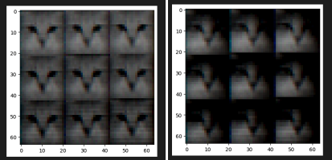
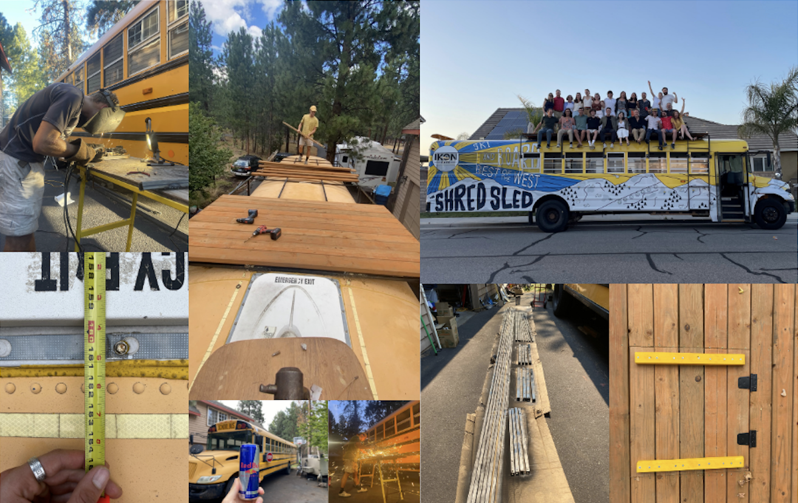
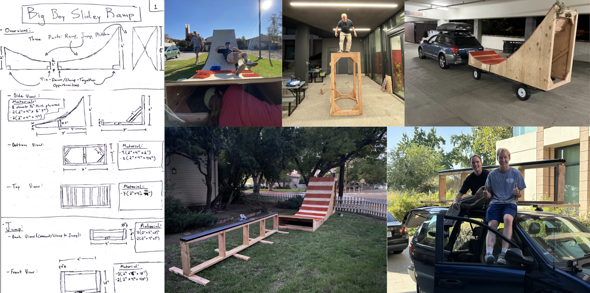

About Me
I’m a fourth year student at Claremont McKenna College, majoring in computer science at Harvey Mudd College. I love to build and learn new things, and am currently recruiting for software engineering roles.
I have work experience in embedded software engineering in the automotive space and full-stack web development, and have informal or academic experience in machine learning, compiler and programming language design, building AI-powered tools, and more. I also am participating in neural networks research, using generative models for climate prediction purposes.
Some other interests of mine are woodworking and welding, listening to and making music, board sports (snowboard, surf, skate), cooking, and travelling.
Email: david.georg.enders@gmail.com
Projects
All-Hands Meeting Recap Generator
I created an AI-powered webtool which can be used to generate a variety of meetings summaries for Samba TV during my 2023 summer internship. It receives certain transcripts automatically from a Zoom webhook, and others can be manually uploaded. I created a CI/CD pipeline which automatically deployed changes I made to the frontend (built using React and JavaScript) and the backend (written in Python and built using various AWS products) to multiple environments.
Variational Autoencoder Implementation

Together with three classmates in my Neural Networks class, I implemented and trained a variational autoencoder from scratch. This is a neural network which is primarily used for image generation and consists fundamentally of an encoder and a decoder with a probabilistic element that helps to prevent overfitting. We trained our network on images of cats and were able to successfully generate more images of cats. View our source code here.
Ski Bus Build

During my time as the President of the Ski and Snowboard Club at my college, the former president and good friend of mine Kirill Myagkov purchased and remodelled a decomissioned school bus for use as a ski bus. We drove the bus to Claremont from Idaho, built a 20x8 foot roof deck, installed storage shelves in the rear interior, had the bus wrapped with a sponsorship from the Ikon Pass, obtained Class B commercial driver’s licenses, and are working on installing underbelly storage. During this time, I learned a wide variety of construction techniques including welding and other metalwork and some woodworking, diagrammed and planned our various projects, fundraised a lot, and learned how to drive a school bus safely.
Gmail Tasks Automation
This project was created to minimize mundane email-writing in my personal life. I was frustrated with writing a lot of repititive emails, and decided to create a tool that would connect to my Gmail accounts and draft emails for me. Using the Google API Python Client and the OpenAI API, this command-line tool can draft individual emails or bulk-draft emails from a spreadsheet of email addresses. The user can choose whether the email should be a new message or a reply to a previous thread, and specifies which new information should be included in the emails. The source code is here.
Ramp/Rail Build

After my first season competing with the Ski & Board team, I wanted to build a ramp which could be used to practice the rail jam event even during the summer when there is no snow. My friends Mikey Ross and Will Sedo helped to build a ramp outfitted with mSnow, a type of plastic snow simulator, attached to a small jump and a rail to practice tricks on. We built the ramp in four separate parts: a platform to stand on, the ramp to slide down on, the small jump, and the rail itself. This makes it much easier to transport the entire setup, so that it can be set up on campus, in parks, in backyards, etc.
Wordle Game and Bot
My friend Cooper Smith and I created this Wordle game and bot in the summer of 2021, looking to practice our Python skills, create a UI using pygame, and write some logic for automatically solving a word game (which also made us better at the game). The source code is here.